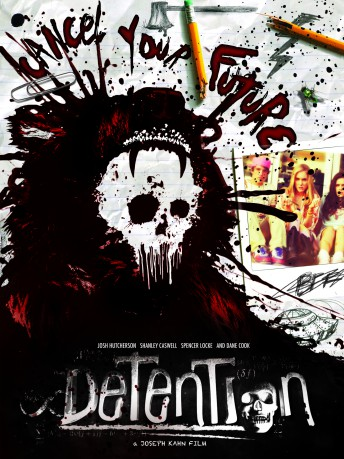

#7201 Detention - Nachsitzen kann tödlich sein
Alternativ: Detention
 
 IMDB-Wertung: 5.8 / 10
IMDB-Wertung: 5.8 / 10  Metascore: 0
Metascore: 0 
This comedy/horror movie centers about a group of teens who go to Grizzly Lake High School. When one of their classmates is killed by someone dressed up as 'Cinderhella' (a character from a popular horror movie), they all fall under suspicion, but when they all get detention, they try to work out who it is.
Jahr: 2011
Dauer: 93 Minuten
FSK: 16
Land: USA Studio: Samuel Goldwyn FilmsTonspuren: DTS - ,
Untertitel: Deutsch,
Auflösung: 1080p (1920x784) Größe: 4147 MB
Genre: Horror, Sci-Fi, Komödie
Regisseur: Joseph Kahn
Drehbuch: Joseph Kahn
Soundtrack:
Darsteller:
- Alison Woods als Taylor Fisher
- Julie Dolan als Taylor's Mom
- Shanley Caswell als Riley Jones
- Daniel Negreanu als Male News Reporter
- Will Wallace als Riley's Dad / Doug Jones
- Josh Breeding als Hipster Thief
 Josh Hutcherson als Clapton Davis
Josh Hutcherson als Clapton Davis- Mickey River als Punk
 Jesse Heiman als Nerd
Jesse Heiman als Nerd- Joseph Keane als Metro
- Percy Daggs III als Jock Kid
- Parker Bagley als Billy Nolan
- Marque Richardson als Toby T.
- A.D. Johnson als Sander Sanderson
- Michael Esparza als Pedro
 Spencer Locke als Ione
Spencer Locke als Ione- Lindsey Morgan als Alexis Spencer
- Tiffany Boone als Mimi
 Dane Cook als Principal Verge
Dane Cook als Principal Verge- Yves Bright als Mr. Kendall
- James Black als Mr. Cooper
- Jessica Lee als Cheerleader
- Jan Anderson als Ms. Macintire
- Travis Fleetwood als Gord
- Ilana Cohn als Officer Marge McNally
 Walter Perez als Elliot Fink
Walter Perez als Elliot Fink- Tammy Minoff als Wendy
 Richard Brake als Billy Nolan's Dad
Richard Brake als Billy Nolan's Dad- Ryan Heinke als Dork
- Brian Guest als Clapton's Shaman
- Patrick Babbitt als Uber Nerd
- Jean Elie als Wrestler
- Jeffrey Patrick Olson als Mr. Kendall's Boyfriend
- Yimmy Yim als Angry Dudette
- Jay Brian Winnick als Principal Woodruff
- Erica Shaffer als Sloan
- Aaron Perilo als Mike
- Allison Paige als Female Student #1
- Matthew Albrecht als Greg / Slashing Beauty
- Kate Kelton als Madison / Slashing Beauty
- Brooke Haven als Female Beauty Beast Victim
- Clayton Reaser als Male Student #2
 Ron Jeremy als Beauty Beast
Ron Jeremy als Beauty Beast- Melanie Abramoff als Lollapalooza Girl
- Erich Lane als Young Doug Jones
 Arthur Darbinyan als Dr. Murdock
Arthur Darbinyan als Dr. Murdock- Justin Smith als Red
- Alexandros S. Potter als Singe
- Sara Amini als Student , uncredited
- Daniel Blake als Football Player , uncredited
Datei: X:\2011(A-F)\Detention - Nachsitzen kann tödlich sein (2011, FSK16, 1920x784).mkv seit 09.10.2017
Festplatte: HD 2010(G-Z)-2011(A-F)
 Es gibt insgesamt 86 Filme in der Gruppe '2011(A-F)'
Es gibt insgesamt 86 Filme in der Gruppe '2011(A-F)'